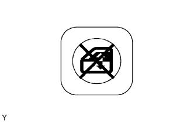

HỆ THỐNG ĐIỀU KHIỂN CỬA SỔ ĐIỆN > Chức năng LÊN/XUỐNG từ xa không hoạt động |
| 1.KIỂM TRA CỤM CÔNG TẮC CHÍNH NÂNG HẠ CỬA SỔ ĐIỆN |
|  |
Tắt công tắc khoá cửa sổ OFF và vận hành các công tắc trên công tắc chính. Kiểm tra rằng chức năng LÊN /XUỐNG từ xa hoạt động bình thường.
|
| ||||
| OK | ||
| ||
| 2.KIỂM TRA CHỨC NĂNG LÊN/XUỐNG KÍNH BẰNG TAY |
Kiểm tra rằng chức năng LÊN/XUỐNGÏ bằng tay của kính cửa sổ hành khách trước và kính cửa sổ sau hoạt động bình thường.
|
| ||||
| OK | ||
| ||